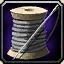

Para mais informação clique no seguinte icon:

Alfaiataria é uma profissão de criação diferente que permite aos jogadores usar vários tecidos e outros reagentes para criar armaduras, bolsas, tecidos
e até mesmo tapetes voadores! Alfaiataria é típicamente desejado por classes que usam tecido (Mage, Priest, Warlock).